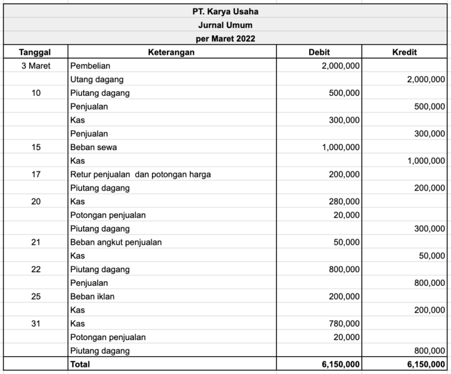

Jurnal Umum

Sumber : Jurnal.id
{kind=link}
- Jurnal umum adalah jurnal yang digunakan untuk mencatat berbagai aktivitas transaksi keuangan dari sebuah bisnis atau perusahaan dalam periode tertentu untuk memudahkan pengelolaan keuangan.
- Mengidentifikasi seluruh aktivitas transaksi yang dilakukan
- Menentukan nilai transaksi
- Mengidentifikasi dampak ekonomi dari transaksi yang terjadi
- Memudahkan pemindahan dampak transaksi pada akun yang sesuai
- Fungsi historis = Semua transaksi disusun berdasarkan periodenya, mengacu pada pencatatan harian yang kronologis dan sistematis
- Fungsi pencatatan = Jurnal umum akan menampung semua transaksi umum yang terjadi, sehingga segala aspek harus dicatatkan terlebih dahulu ke dalam jurnal umum
- Fungsi analisis = Setiap catatan atau record dari transaksi jurnal harus merupakan hasil dari analisis serta identifikasi ke dalam debit/kredit
- Fungsi instruksi = Pencatatan di buku jurnal besar bukan sekadar dokumen transaksi, namun berisi petunjuk penentu debit atau kredit
- Fungsi informasi = Jurnal umum memuat berbagai informasi detail terkait catatan transaksi perusahaan yang pernah terjadi
- Menemukan informasi terkait penambahan atau pengurangan suatu prakiraan dalam pengelolaan keuangan
- Mengetahui jumlah pencatatan suatu perkiraan atau lebih
- Mengidentifikasi jumlah yang dikenai debit atau kredit, di mana keduanya harus seimbang (debit = kredit)
- Mengetahui jumlah keseluruhan yang sudah diunggah ke jurnal buku besar sesuai tanda referensi nomor perkiraan
- Mengetahui jumlah keseluruhan yang sudah diungah ke jurnal buku besar sesuai tanda referensi rincian pekerjaan
Apa Itu Jurnal Umum?
Tujuan Dibuatnya Jurnal Umum
Fungsi Jurnal Umum
Fungsi Jurnal Umum Bagi Perusahaan
Tronic!